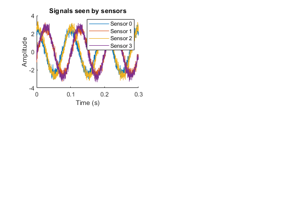
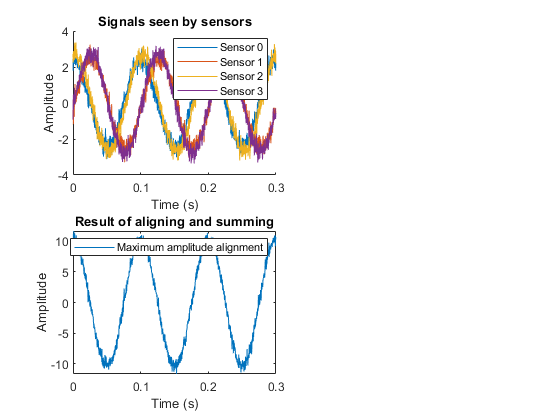
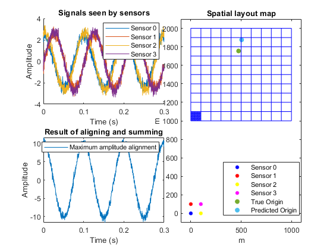
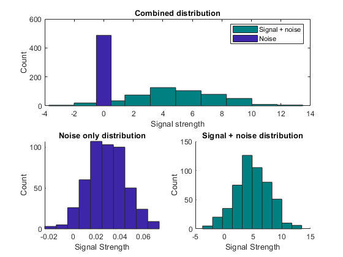

Contents
Initialization
close all;
clear all;
Sensor placement
s0 = [0 0];
s1 = [100 0];
s2 = [0 100];
s3 = [100 100];
Grid design
grid = cell(100,100);
for i = 1:100
for j = 1:100
grid{i,j} = [ (10*i-5) (10*j+995)];
end
end
Signal condition generation
randx = randi(100,1,1);
randy = randi(100,1,1);
signal_to_noise_ratio = randi(30,1,1)
origin_point = {randx,randy};
origin = grid{randx, randy};
tempc = randi([-40 10],1,1)
speed_of_sound = 331.3 * sqrt(1 + (tempc / 273.15))
signal_to_noise_ratio =
11
tempc =
-11
speed_of_sound =
324.5606
Calculate distance to sensors
d0 = distance(s0,origin);
d1 = distance(s1,origin);
d2 = distance(s2,origin);
d3 = distance(s3,origin);
delta1 = d1 - d0;
delta2 = d2 - d0;
delta3 = d3 - d0;
decay0 = 100000000/(4*pi*d0^2);
decay1 = 100000000/(4*pi*d1^2);
decay2 = 100000000/(4*pi*d2^2);
decay3 = 100000000/(4*pi*d3^2);
Signal Generation
t = 0:1/3413:0.3;
signal0 = decay0 .* cos(10*2*pi.*t);
wavelength = speed_of_sound/10;
shift1 = delta1/wavelength;
shift2 = delta2/wavelength;
shift3 = delta3/wavelength;
signal1 = decay1 .* cos(10*2*pi.*(t-shift1/10));
signal2 = decay2 .* cos(10*2*pi.*(t-shift2/10));
signal3 = decay3 .* cos(10*2*pi.*(t-shift3/10));
signal0 = awgn(signal0,signal_to_noise_ratio);
signal1 = awgn(signal1,signal_to_noise_ratio);
signal2 = awgn(signal2,signal_to_noise_ratio);
signal3 = awgn(signal3,signal_to_noise_ratio);
figure()
subplot(2,4,[1 2]), hold on
plot(t,signal0);
plot(t,signal1);
plot(t,signal2);
plot(t,signal3);
legend('Sensor 0', 'Sensor 1', 'Sensor 2', 'Sensor 3');
title("Signals seen by sensors");
xlabel("Time (s)");
ylabel("Amplitude");

Noise analysis
zero = zeros(1,1024);
noise_avg = [ ];
for k = 1:100
noise0 = awgn(zero,signal_to_noise_ratio);
noise1 = awgn(zero,signal_to_noise_ratio);
noise2 = awgn(zero,signal_to_noise_ratio);
noise3 = awgn(zero,signal_to_noise_ratio);
noise = noise0 + noise1 + noise2 + noise3;
noise_fft = fft(noise);
P2 = abs(noise_fft/1024);
P1 = P2(1:1024/2+1);
P1(2:end-1) = 2*P1(2:end-1);
val = P1(4);
noise_avg = [noise_avg val];
end
deviation = std(noise_avg);
average = mean(noise_avg);
Confidence engine and geolocation algorithim
[guess, height, mean1, std1] = algorithm(s0,s1,s2,s3,signal0,signal1,signal2,signal3,grid,speed_of_sound,deviation,average);
Z_score_of_detection =
147.4754
The system is 100
percent confident a 10hz infrasound signal is present
Z_score_of_geolocation =
1.7097
The system is 95.6343
percent confident it has correctly predicted the origin location

Plot
subplot(2,4,[3 4 7 8]);
gscatter(0,0,'Sensor 0', 'b'),hold on
gscatter(0,100,'Sensor 1', 'r');
gscatter(100,0,'Sensor 2', 'y');
gscatter(100,100,'Sensor 3', 'm');
xlim([-100 1100]),ylim([-100 2100]);
scatter([origin(1)],[origin(2)],'filled');
scatter([guess(1)],[guess(2)],'filled');
legend('Sensor 0', 'Sensor 1', 'Sensor 2', 'Sensor 3', 'True Origin','Predicted Origin');
title("Spatial layout map");
x1 = [];
y1 = [];
for x = 1:10
for y = 1:10
z = grid{x,y};
k1 = [(z(1) - 5) (z(1) +5) (z(1) +5) (z(1) -5) (z(1) -5)];
k2 = [(z(2) + 5) (z(2) +5) (z(2) -5) (z(2) -5) (z(2) +5)];
x1 = [x1 k1];
y1 = [y1 k2];
end
plot(x1,y1,'b','HandleVisibility', 'off'), hold on;
x1 = [];
y1 = [];
end
for x = 1:10
for y = 1:10
z = grid{x*10,y*10};
k1 = [(z(1) - 50) (z(1) +50) (z(1) +50) (z(1) -50) (z(1) -50)] - 45;
k2 = [(z(2) + 50) (z(2) +50) (z(2) -50) (z(2) -50) (z(2) +50)] - 45;
x1 = [x1 k1];
y1 = [y1 k2];
end
plot(x1,y1,'b','HandleVisibility','off'),xlabel("m"),ylabel("m")
x1 = [];
y1 = [];
end
hold off;

Histogram Generation
n = 1000; signalPresentAbsent = rand(1,n);
signalPresentAbsent = round(signalPresentAbsent);
for i = 1:length(signalPresentAbsent)
if signalPresentAbsent(i) == 1
signal(i) = random('norm',mean1,std1);
else
signal(i) = random('norm',average,deviation);
end
end
figure()
subplot(2,1,1)
hist(signal(signalPresentAbsent==1)),title("Combined distribution"),hold on,xlabel("Signal strength"),ylabel("Count");
h = findobj(gca,'Type','patch');
h.FaceColor = [0 0.5 0.5];
k = -2:1:2;
hist(signal(signalPresentAbsent==0),k),legend('Signal + noise','Noise')
subplot(2,2,4), hold on
hist(signal(signalPresentAbsent==1)),title("Signal + noise distribution"),xlabel("Signal Strength"),ylabel("Count");
h = findobj(gca,'Type','patch');
h.FaceColor = [0 0.5 0.5];
subplot(2,2,3), hold on
hist(signal(signalPresentAbsent==0)),title("Noise only distribution"),xlabel("Signal Strength"),ylabel("Count");
response = signal>0.5;
nPresent = sum(signalPresentAbsent==1);
hits = sum(response(signalPresentAbsent==1)==1)/nPresent;
misses = sum(response(signalPresentAbsent==1)==0)/nPresent;
nAbsent = sum(signalPresentAbsent==1);
correctRejects = sum(response(signalPresentAbsent==0)==0)/nAbsent;
falseAlarms = sum(response(signalPresentAbsent==0)==1)/nAbsent;
zHits = icdf('norm',hits,0,1);
zFalseAlarms = icdf('norm',falseAlarms,0,1);
dPrime = zHits-zFalseAlarms;

Error calculation
d_1 = distance(s0,origin);
d_2 = distance(s0,guess);
geolocation_percent_error = sqrt((d_2 - d_1)^2)/d_1 * 100;
fprintf('\n');
fprintf('\n');
fprintf("The actual error of the origin prediction is")
disp(geolocation_percent_error);
fprintf("percent")
fprintf('\n');
fprintf('\n');
The actual error of the origin prediction is 6.8021
percent
Confidence engine algorithim definition
function [predict, amp, avg1, std1] = algorithm(s0,s1,s2,s3,signal_0,signal_1,signal_2,signal_3,grid,speed,deviation1,average1)
amp = 0;
amplitude = 0;
predict = {1,1};
data = [];
data2 = [];
for i = 1:100
for k = 1:100
distance0 = distance(s0,grid{i,k});
distance1 = distance(s1,grid{i,k});
distance2 = distance(s2,grid{i,k});
distance3 = distance(s3,grid{i,k});
delta_1 = distance1 - distance0;
delta_2 = distance2 - distance0;
delta_3 = distance3 - distance0;
wave_length = speed/10;
shift_1 = delta_1/wave_length;
shift_2 = delta_2/wave_length;
shift_3 = delta_3/wave_length;
signal0_shift = signal_0;
signal1_shift = circshift(signal_1,round(-shift_1*1024/3));
signal2_shift = circshift(signal_2,round(-shift_2*1024/3));
signal3_shift = circshift(signal_3,round(-shift_3*1024/3));
beamformed = signal0_shift + signal1_shift + signal2_shift + signal3_shift;
amplitude = mean(sqrt(beamformed.^2));
data = [data amplitude];
x1 = fft(beamformed);
P2 = abs(x1/1024);
P1 = P2(1:1024/2+1);
P1(2:end-1) = 2*P1(2:end-1);
amp_10 = P1(4);
data2 = [data2 amp_10];
if amplitude > amp
amp = amplitude;
predict = grid{i,k};
beamformed_plot_final = beamformed;
end
end
end
t = 0:1/3413:0.3;
subplot(2,4,[5 6]);
plot(t,beamformed_plot_final);
title("Result of aligning and summing");
xlabel("Time (s)");
ylabel("Amplitude");
legend('Maximum amplitude alignment');
avg1 = mean(data2);
std1 = std(data2);
Z_score_of_detection = (amp_10 - average1)/(deviation1)
prob = normcdf(Z_score_of_detection) * 100;
fprintf('The system is ');
disp(prob);
disp('percent confident a 10hz infrasound signal is present');
data_mean = mean(data);
data_std = std(data);
Z_score_of_geolocation = (amp - data_mean)/data_std
prob = normcdf(Z_score_of_geolocation) * 100;
fprintf('The system is ');
disp(prob);
disp('percent confident it has correctly predicted the origin location');
end
Distance function definition
function dist = distance(p1,p2)
a = p2(1);
b = p2(2);
dist = sqrt(abs((p2(1) - p1(1))^2 + (p2(2)-p1(2))^2));
end